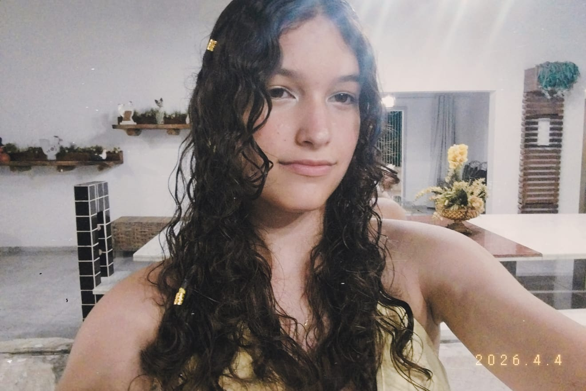

Idade: 15 anos
Curso: Informatica para internet.
Instituição: IFRN - Instituto Federal de Educação, Ciência e Tecnologia do Rio Grande do Norte (caicó)
Interesses:Música, leitura, patinação, pintura, enigmas e fantasias.
Participação no Projeto: Minha participação na criação do site foi Contribuir com a ideia geral do projeto e desenvolver a parte visual da página, o css, algums paginas do html...
Esportes: Saúde e Lazer
Promovendo informação, bem-estar e conhecimento sobre o universo esportivo.
© 2026 — Todos os direitos reservados.